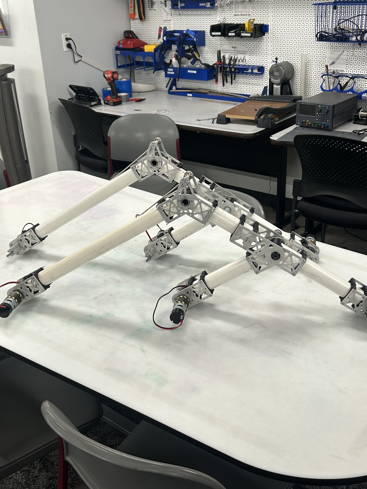

Student Team
CU Rover Team 2025-2026

Overview
For the 2025-2026 University Rover Challenge, our team designed and built a rover that is able to complete a series of tasks that simulate an actual Mars rover. These tasks included navigating with GNSS, collecting and analyzing a sub-surface sample, delivering small objects, etc.
My Contribution
I served two roles on the team: systems and mechanical team. As part of the systems team, I supported all sub-teams in cross-functional design and integration. I also navigated scheduling and setting tasks, and parts of the requisite documentation. As part of the mechanical team, I used CAD to design the rover chassis and suspension, and used various manufacturing techniques to help with fabrication and assembly.


Results
We were not able to attend the URC competition. However, it was a great learning experience and we have all the tools and materials to be competitive next year. I am proud of the work that I did on the team, and I feel like I've learned a lot about project management.